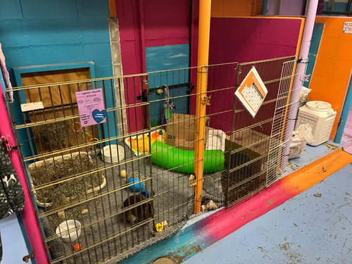
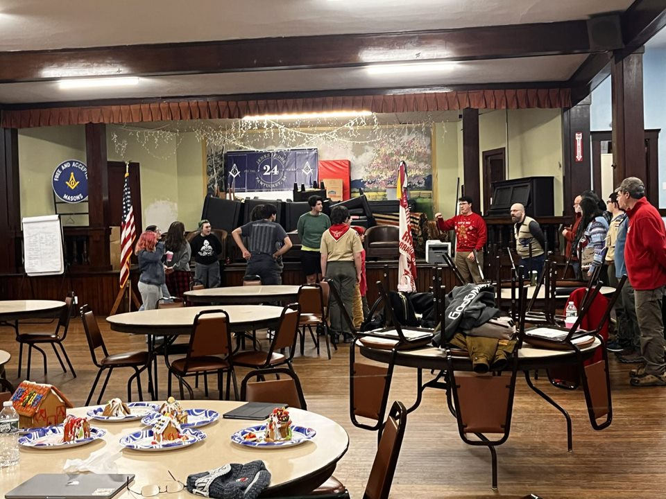
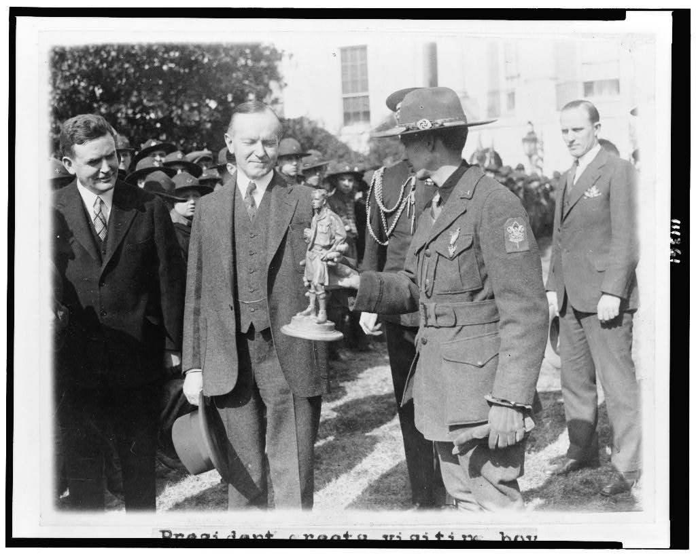

By Eric Xia
When Rudolph Kraus was a Boy Scout thirty years ago, he had no trouble finding an Eagle Project, the work of service leadership necessary for achieving the highest rank. His church had been built decades prior, and the interior of the garage was in terrible shape. Chips of paint flaked off at the touch. With the help of his troop, they sanded and stripped the walls bare. They brushed primer and a coat of white paint back on, and then scrubbed the floors until they looked pristine. The project helped his suburban Chicago neighborhood through the ways Scouting is known for: in repainting the church’s property, he followed a long tradition of projects which restore or replace existing fixtures in a community. To many, Eagle Projects still mean this kind of revitalization: chopping back invasive brambles, constructing new shelves for a food pantry, installing trail markers and signs. Yet today, many of the ways through which Scouts serve their community are intricately entangled with the things they love. Accompanying this diversification is a growing inclusivity within Scouting. In addition to the acceptances of LGBT and disabled youth, young women now make up one of every eight Scouts. As a consequence, communities are emerging where more nuanced notions of service are taking hold.
2019 was a bad year for the Boy Scouts of America. Once an ideal of community engagement and leadership towards which many youth programs aspired, the BSA, now known as Scouting America, had undergone decades of steady decline. Since peaking at 4.8 million members in the seventies, the number of active Scouts had fallen to a fifth. Making matters worse was their separation from a long-time financial supporter, The Church of Latter Day Saints, the onset of the COVID-19 pandemic, and a sexual assault lawsuit which led them to file for bankruptcy. Freed from potential religious grievances, and hoping to stem a constant exodus from troops across the nation, the BSA took a chance on something remarkable: they began to allow young women to participate in the program. They would participate in the same activities as the Boy Scouts – food drives, community service, camping trips – while operating separately from male troops. Today, over three hundred thousand girls have joined Scouting in the United States, and more than six thousand have earned its highest rank, Eagle.
Officially, two troops exist in Riverside, a community on the outskirts of East Providence, Rhode Island: 55B and 55G. Since 2019, they have operated as a linked troop, with boys and girls in different patrols. I visited them on a wintery night in December. The meeting was being held in the basement of a Masonic lodge, fashioned in the Greek Revival style. Round folding tables were set up across the floor, while bar fixtures sat unassumingly in the corner. Commemorative plaques ran along the plaster walls: at the back, a boyish Scout was presenting a Powerpoint on career pathways in photography. He was in full attire, wearing a tan uniform, olive pants and troop neckerchief. There were a dozen other members, sitting in chairs pulled to the front of the room: they were dressed in a more relaxed fashion, some wearing sweatpants or hoodies. Three of them were girls. Close to where I entered, a table of adult volunteers quietly conversed. As I walked by they gave me a passing glance; for a moment, I stood silently at the back of the room. Then one bespectacled volunteer came to shake my hand, and I recognized him to be Rudolph Kraus, the assistant scoutmaster who’d extended an invitation on Facebook to visit in-person. He introduced me to the other adults, including Chris Vandal, a well-built man with strong features, and Chris Cunha, the fatherly scoutmaster of the troop.
My previous conversations had made it clear that when a co-ed troop succeeds, it does so without a great deal of outward attention towards the circumstances in which it operates. Frequently, Scout troops are compared to families, and I sometimes felt like a social worker inquiring about signs of child abuse. Yes, they went on campouts together, separated by gender. Indeed, they had a few early detractors, parents who proclaimed their refusal to participate in a Scouting program which was not gender segregated, children who disappeared because their parents decided a same-sex sports program would be a better fit. Yet hard times had come and gone, and the troop had never hit the rock-bottom I envisioned. My own troop, which operated for a lively thirty years, had shut down in 2022. With COVID and virtual troop meetings, our troop had lost many yearly traditions. These included kayak trips, winter snowshoeing, summer camp in the Olympic Peninsula, and the pool party during which we recruited Cub Scouts, the Scouting program for preteen youth. I had imagined in many troops, the decision to involve a girls troop had been, in part, an effort to stem a general loss of interest in Scouting. Yet in Troop 55, they had stuck out the periods of inactivity. Many of the regulars were close outside of Scouting.
As we turned to the Eagle projects the troop had done, the conversation grew more animated. Chris Vandal recounted them in great detail, the passion of his scouts shining through his eyes. Two of the girl Eagle Scouts had done their projects with the Providence Animal Rescue League. With the help of her troop, Rosa had built hinged gates for the animal enclosures, replacing temporary ziptied contraptions with sturdier solutions. Eliza had assembled gift baskets for the families of adoptees, selecting toys and snacks for each pet. The boys had unique projects as well. One had designed a paint-by-numbers mural for their local church, where scouts came in and painted section by section. Jacob, a precocious seventeen-year-old and junior assistant scoutmaster, had installed wooden bridges on a nearby island known for its gulls and swallows. In contrast, the kinds of Eagle Projects that I was used to participating in had more routine aims: clearing invasive plants, or running collection drives. They restored, rebuilt, or remade important parts of the community, but lacked the creative vision that the projects here shared. As I complimented the inventiveness of the Eagle Scouts, Vandal remarked: “You have to have a concern. And that becomes your project”.
Rosa's Eagle project at the Providence Animal Rescue League.
Vandal’s own children had done projects which were unabashedly artistic. His oldest son had created playlists for dementia patients, interviewing their relatives to find the music which spoke to them the most. The staff could then play these songs when the patients were irritable or cranky: "I mean, they ended up all being the same. Frank Sinatra, that kind of thing. But it was what they liked". Another son had hosted a writing workshop at Rhode Island College, turning words or fragments of sentences into fantastical stories. Vandal came from a family of Boy Scouts. Yet his own father had never done an Eagle project, and he heard all the time how much he had regretted it. His day job was as a sheet metal roofer, installing aluminum panels on residential and commercial buildings. It was an essential occupation, albeit one which often goes unnoticed. Now his children, and others in Troop 55, were breaking out of a pattern within which Eagle Projects were meant to fit. Their projects were still built or planned in service of their community, and yet they did not reinforce an existing image of the world. Instead, they strove to change its processes and habits, to realize unreleased potential in one way or another. Would these kinds of projects always go the way they were intended? It seems unlikely, and yet in encouraging these initiatives the troop was considering a more holistic view of society: the needs of animals, bird-watchers, art lovers, the elderly. Mulling over their projects, a word with which I never would have described any Eagle projects before – compassionate – sprang to mind.
Jason is a parent who joined Troop 55 due to their inclusive nature. During closing time, the scouts lined up before the flags in their patrols: there were three patrols of boys, and one with the girls. While the youth leaders announced the events for the following week, he stood next to them and translated in sign language to his deaf son, Andrew. He and his four sons had been looking to join a troop for a while, and his oldest son was friends with a member of the Riverside troop. They saw that Troop 55 was gender-inclusive, and had an LGBT presence, and decided to begin coming to the meetings. Some things were made more difficult by Andrew’s deafness: campfire skits had to express jokes without the use of sound, and it was hard to communicate effectively when more than a single scout was speaking. Yet on the whole, he seemed very happy to be there supporting his kids, and felt that they were getting a genuine experience within Scouting. After the closing announcements and the recitation of the Scout Oath and Law, Jason raised his hands and began to make throwing motions. The scouts dutifully followed along. It was the sign of the day, "basketball".
Closing ceremony in Troop 55 with an adult volunteer signing.
The number of active members in Scouting has fallen greatly over the past decades. During COVID, the ability of councils to advocate for the program in schools was completely eliminated. Combined with a lack of outdoor activities which could be carried out safely, a two-fold decline in membership ensued. However, after the pandemic, Scouting’s numbers seem to have stabilized. The organization reported a 3% increase in active members in 2023, and have seen gains in membership since 2020. Tim McCandless, the Chief Executive of Narragansett Council, which serves Rhode Island and neighboring communities in Massachusetts and Connecticut, admits that some of this is due to their decision to admit women. He believes the decision to allow girls in Scouting was meant to accommodate busy families, handily solving the logistical challenge of attending different after-school activities. The Girl Scouts, which do not allow cisgender boys in their organization, went unmentioned.
When I asked about the reasons someone might join Scouting today, McCandless cited the appeal of the outdoors as a universal attraction among boys and girls, and the opportunities for personal growth. He emphasized the friendships made through the program, and the unique experiences which Scouts undertake. Before a Scout becomes an Eagle, they must earn twenty one merit badges, each demonstrating knowledge on a particular topic. These include Camping – which requires twenty nights spent outdoors – and the First Aid merit badge, which involves CPR training from a licensed instructor. As our conversation wound down, he raised the classic arguments which win parents over, the opportunities for leadership and civic involvement. Scouts can take on a range of leadership positions wih a troop, not only as the senior patrol leader or patrol leader, but also in roles with special responsibilities, such as the troop quartermaster or scribe. He additionally emphasized the necessity of teaching self-reliance, and building character through challenging experiences.
“Who can estimate the physical, mental, and spiritual force that would have been added to our national life during this period if the other six also had been scouts?” -- Calvin Coolidge
These comments echo the traditional ideals of Boy Scouts. Although McCandless made no outright mentions of gender, concepts such as self-reliance and civic involvement have traditionally been associated with masculine identity. In his seminal work “The Boy Scouts and the Validation of Masculinity”, Jeffrey P. Hantover argued that the Boy Scouts of America established twentieth-century ideals of manliness in an increasingly corporate and sedentary America. Influenced by organizations modeling after unrealistic masculine heroes, such as Seton’s Woodcraft Indians and the Beard’s Sons of Daniel Boone, the organization hedged “pioneer-like virility with Victorian self-control and expert management” (Benjamin René Jordan). It was with this image of Scouting in mind that one out of every seven boys joined during the debutting years of 1910 to 1926, and which led President Calvin Coolidge to remark: “who can estimate the physical, mental, and spiritual force that would have been added to our national life during this period if the other six also had been scouts?” Whether the role models for young men and women should be the same gender remains an open question.
1500 Boy Scouts from N.Y., N.J., & Conn. making annual pilgrimage to the Capitol being greeted at the White House by President Coolidge. (Library of Congress)
Chris Cunha, the Scoutmaster of Troop 55, never did Boy Scouts: he was raised by a single mother who was forbidden from the Scouts. While women were allowed to oversee the activities of Cub Scouts, there were much stronger gender norms around the Boy Scouts which prevented her from attending campouts – even attending meetings was frowned upon. Exclusively male adult leadership was near-universal among troops less than a decade ago, and continues to be the case across America. In another interview, a female leader who was attending summer camp recounted being told that she could just drop off her kids on the opposite side of a field and leave. In Troop 55, the changes to leadership occurred rapidly. After an older cohort of adults left the troop, many raised in military families, the norms around gender relaxed. The new leadership paved the way for the establishment of the girls troop, and for a more inclusive community as a whole.
For the girls who now choose to do Boy Scouts, it seems the increased opportunity for active pursuits differentiate the program from the Girl Scouts. Adalee Pino, from Troop 100 in Seattle, Washington, is both a Boy and Girl Scout. In Girl Scouts, she made bracelets and did arts and crafts. While the Girl Scout curriculum has grown to encompass a range of subjects, many which are oriented around career skills and entrepreneurship, these changes were not brought up during our conversation. She believes Girl Scouts caters to a more specific audience than the Boy Scouts, and appreciates the leadership opportunities she receives through Boy Scouts. Her mother, a former scoutmaster, opined: "it was made by single moms, for single moms. You know how with summer camp merit badges, you're not doing everything, but you can get the basic gist, and they sign off on it? That's what all of Girl Scouts is." Two girls in Troop 55, Calico and Ellie, had also briefly been a part of the program. "We played games." With a shrug, Calico remarked: "It's basically Home EC".
Patrick McCann, former scoutmaster and Girl Scout leader, held a more balanced view. Girl Scouts are, on the average, younger than Boy Scouts, and he likened the Girl Scout program more to the Cub Scouts program. Girls join the organization in yearly cohorts, which means they primarily interact only with peers who are the same age. In contrast, Scout troops range over the peaks and valleys of adolescence, bringing together preteens fresh out of Cub Scouts with young adults about to graduate high school. Importantly, Boy Scouts have role models built into its organizational structure, whereas Girl Scouts do not. McCann remarked, “Let’s say I want my daughter to be in Girl Scouts. Then I need to create a troop. That troop exists until you’re done, and then it disappears”. This doesn’t mean that the opportunity for personal development, leadership, or community invovement is lost. Yet, lacking the organizational structure in Scouting, the extent to which Girl Scout troops engage with their communities in a permanent and lasting way can be more limited. The Girl Scouts offer an equivalent honor to the Eagle Rank, known as the Gold Award. However, while the Gold Award requires a service project, it usually does not involve their troop as a whole.
At the beginning of the twentieth century, the goals of the Boy Scouts were highly gendered. Scouting, and service within the organization, validated masculine identity. They fulfilled a burgeoning obligation within adolescent Scouts to perform work. Furthermore, this work was, at its heart, essentially masculine: an affirmation of their continual contributions to society, and motivated by their devotion to community above all else: their passions and interests. In the 1907 article The Outlook for the Average Man, the connection between male effort and existence was made explicit: "the world is steadily moving towards the position in which the individual is to contribute faithfully and duly his quota of productive or protective social effort, and to receive in return a modest, certain, not greatly variable stipend". In the openness of the projects I saw in Troop 55, the focus moved away from such a gendered outlook towards an open perspective on what constituted work. While planning my own project, which involved installing educational signage at a fish hatchery, I had proposed involving other scouts in the design process. This was met with disbelief, and well-meaning skepticism towards the degree to which moving pixels on digital devices could meaningfully serve the community. In contrast, in Troop 55, much of the community service they performed was guided by the scout’s passions. The increasingly inclusive community led to different notions of common good, and service.
The troop has two youth leaders, known as Senior Patrol Leaders, who are responsible for planning meetings. Ash, the SPL for the boys troop, had been presenting earlier on careers in photography. He is fifteen years old, and talked at length about servant-leadership, a form of guidance in which leaders act as an exemplar of service to others. He emphasized he wanted to contribute to the troop as a whole. He said that even though the organization is now officially named Scouting America, he still thought of it as the Boy Scouts. Nothing had changed about the meetings, he believed, other than the introduction of girls. Mars, the SPL for the girls troop, is sixteen. She joined Scouting through a friend at her school; her family is new to the community. The topic of respect surfaced multiple times in our conversation. "In places like school, you don't get to work with adults how you do here, because they see you as kids, they talk to you different and treat you different, but I feel like here, especially because we got a good relationship with the adults, we can talk to them like friends”. Scouting fosters unique relationships between adolescents and adults, outside of the uneven power dynamics of school or workplace interactions. These relationships can form essential parts of identity and self worth, and enable them to succeed later in their careers.
Over their century-long history, the Boy Scouts have been remarkably consistent with their mission: enabling young men, and now women, to make ethical and moral choices over the course of their lifetimes. Even with the large declines in membership in the last few years, the structure of troop meetings have not changed much. The scouts in Troop 55 are expected to be in uniform, and on time. Every meeting has a philosophical keynote known as the Scoutmaster’s Minute, and a recitation of the Outdoor Code. They are always closed with the recounting of the Scout Law and Oath, which ask scouts to act trustworthy, loyal, helpful, and brave. In the final line of the Scout Oath, members pledge to act “morally straight”: a dated phrase which is left entirely up to an individual’s interpretation.
Now, with young women joining troops nationwide, Scouting has the chance to teach a new audience lessons which are far more relevant to their daily lives than before. In the best of cases, linked troops foster a newfound acceptance of the social realities outside of Scouting. One lesson: there are many ways in which young people can earn the respect of their peers, outside of their adherence to traditions. Another lesson: there are many kinds of people, outside of the male and able-bodied, with enthusiasm for outdoor adventure and exploration. The chance to instruct young men and women, through the lens of a more nuanced masculinity, shines through.